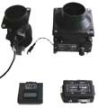

http://2a2.ru/
| тел. +7 927 800 76 16 http://2a2.ru/ |
|---|
ТРВ-2. ТЕСТЕР ПРОВЕРКИ ДАТЧИКОВ МАССОВОГО РАСХОДА ВОЗДУХА (ДМРВ) ООО «А2» разработало и освоило производство тестера проверки датчиков массового расхода воздуха (ДМРВ). ТРВ-2 предназначен для диагностики систем питания воздухом инжекторных двигателей для отечественных автомобилей марки ВАЗ, ГАЗ, УАЗ, ИЖ, а также импортных автомобилей, в составе которых применяются датчики массового расхода воздуха (ДМРВ):
Сфера применения прибора—СТО, авторемонтные предприятия и мастерские, фирмы и магазины по продаже автомобильных запасных частей. Необходимость разработки ТРВ-2 связана с тем, что ДМРВ, являясь одним из основных и наиболее дорогих датчиков электронной системы управления двигателем (ЭСУД), оказывает наибольшее влияние н а мощностные показатели двигателя и эксплуатационный расход топлива. Вследствие жестких условий воздействия: горячего масла, пыли и абразивных частиц—происходит постепенное разрушение чувствительного элемента ДМРВ, и, как следствие, смещение его выходной характеристики относительно эталонной, определить которое с помощью диагностического сканера-тестера можно только качественно, то есть при отказе ДМРВ. Результаты лабораторных работ по проверке отказавших ДМРВ показали, что наиболее типичное отклонение выходной характеристики для пленочных ДМРВ HFM5-4.7 BOSCH составляет минус (20...40) %. На основании этого исследования можно сделать вывод, что контроллер ЭСУД даже при наличии датчика кислорода не может по вполне объективным причинам, а их может быть достаточно много, идентифицировать код неисправности ЭСУД, причиной которого является «уход» выходной характеристики ДМРВ менее 20. «Сползание» характеристики ДМРВ приводит не только к ухудшению топливной экономичности и приемистости двигателя, но и к более интенсивному износу (перегреву) нейтрализатора (катализатора) отработавших газов, работающего на переобедненных топливо-воздушных смесях. Основные функции ТРВ-2:
ТРВ-2 позволяет контролировать и рассчитывать следующие параметры по двум каналам измерения (эталонный и контролируемый):
Основными компонентами тестера ТРВ-2 являются: прибор ТРВ-2, адаптер АДВ-2, устройство продувки ДМРВ и рабочий эталон ДМРВ. Прибор ТРВ-2 является управляющим, измерительным, вычислительным и регистрирующим прибором. Управление тестером выполняется с помощью 2-х функциональных клавиш:
Вывод информации производится на ЖК-индикатор с подсветкой на 2х8 символов. Адаптер АДВ-2 является коммутационным устройством и преобразователем сигналов, имеет питающий кабель, длиной 1,5м с зажимами типа «Крокодил», и маркированные электрические соединители для подключения кабелей и устройств: тестера ТРВ-2, рабочего эталона ДМРВ, контролируемого ДМРВ, устройства продувки УПД-2 и тестового оборудования. В качестве продувочного устройства ДМРВ может использоваться оригинальное устройство УПД-2, производительностью до 60 кг/ч при питании =12В, или бытовой пылесос, производительностью до 130 кг/ч при питании от сети ~220В-50Гц. Основное требование к устройству—допустимый размах пульсаций потока воздуха, измеренный тестером ТРВ-2, не должен превышать 15 кг/ч в диапазоне расходов 50...120 кг/ч. Тестер ТРВ-2 позволяет выявить такие причины неисправностей системы питания двигателя воздухом как: засоренность воздушного фильтра, несоответствие или отклонение выходной характеристики ДМРВ от заданной по ТУ (поверка ДМРВ), неисправность регулятора холостого хода, неправильная начальная регулировка дроссельного устройства, негерметичность впускной системы после ДМРВ (подсос неучтенного воздуха) или подсос воздуха на выпуске и др. Поверка ДМРВ проводится с целью выявить относительное (в процентах) отклонение фактической выходной характеристики эксплуатируемого ДМРВ от эталонной, заданной по ТУ. В случае превышения порога отклонений может быть принято решение о браковании эксплуатируемого ДМРВ и замене его на исправный аналог. Характеристику вновь устанавливаемого на автомобиль ДМРВ можно также поверить с помощью ТРВ-2. Поверка ДМРВ выполняется на продувочном устройстве с применением рабочего эталона ДМРВ, входящего в комплект прибора, по упрощенной методике, отработанной экспериментально для условий автосервиса. Удовлетворительная точность контроля ±(1...1,5)% обеспечивается за счет усреднения результатов высокоскоростного измерения сигналов ДМРВ (до 2 кГц) в двух циклах поверки, проводимых в течение не менее 10 секунд, то есть примерно по 20 тыс. измерений на каждый цикл поверки, при прямой (цикл 1) и соответственно инверсной (цикл 2) установке эксплуатируемого ДМРВ и рабочего эталон а ДМРВ. Эта методика отработана экспериментально и позволяет в значительной мере нивелировать основные негативные факторы при измерении расхода воздуха: колебание напряжения питания устройства продувки ДМРВ, различное аэродинамическое сопротивление ДМРВ и их воздуховодов, зависимость показаний датчика от положения и порядка его установки (до эталона или после него), а также от длины и сечения соединительных шлангов. В базовый комплект ТРВ-2 входят: прибор ТРВ-2, адаптер АДВ-2 с кабелем питания (1,5м), кабель тестера (0,6м), шланг переходной ДМРВ—2 шт., переходное сопло для пылесоса, рабочая сумка, руководство пользователя и паспорт. Для пользователя базового комплекта ТРВ-2 предоставляется возможность самостоятельно выбрать и откалибровать условный эталон ДМРВ по методике, рекомендуемой разработчиком, а затем применять этот ДМРВ как заменитель рабочего эталона ДМРВ. Однако в данном случае за точность показаний условного эталона ДМРВ и ошибочность решений, принятых на основе данных измерений, пользователь принимает ответственность на себя. Руководство по эксплуатации и паспорт на прибор ТРВ-2 в формате *.pdf можно взять здесь. На странице price.html приведены цены на продукцию ООО «А2». Заказ прибора ТРВ-2 |
•главная •где купить •цены •продукция •документация •программы •коды ГАЗ •ЭСУД ГАЗ •ЭСУД PATRIOT •ЭСУД ВАЗ •ЭСУД STEYR •автосервисы •сайты e-mail: •a2@2a2.ru |